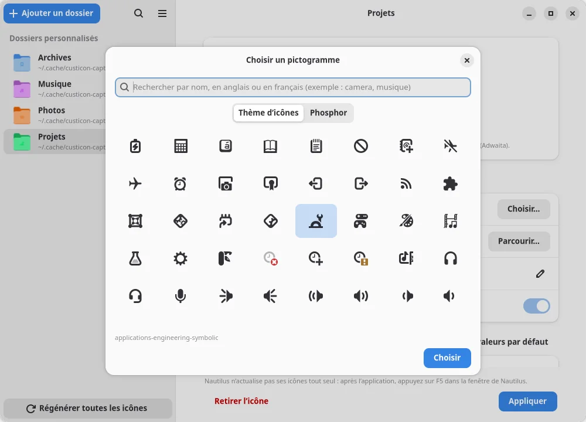
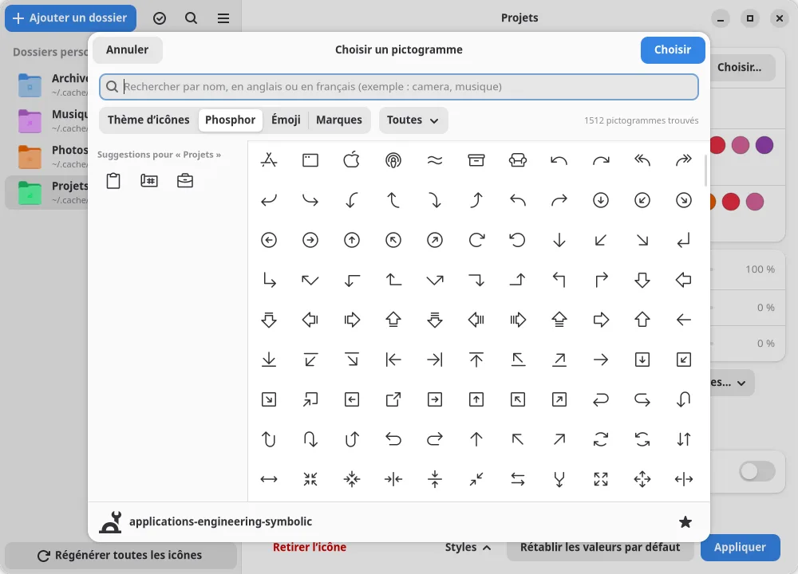
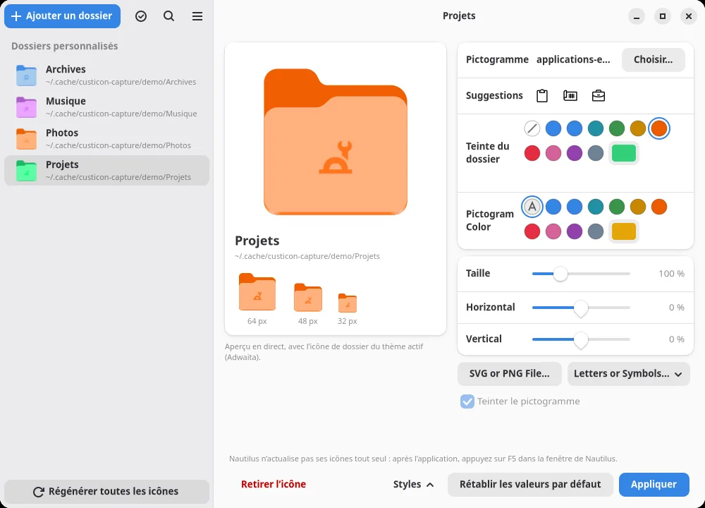
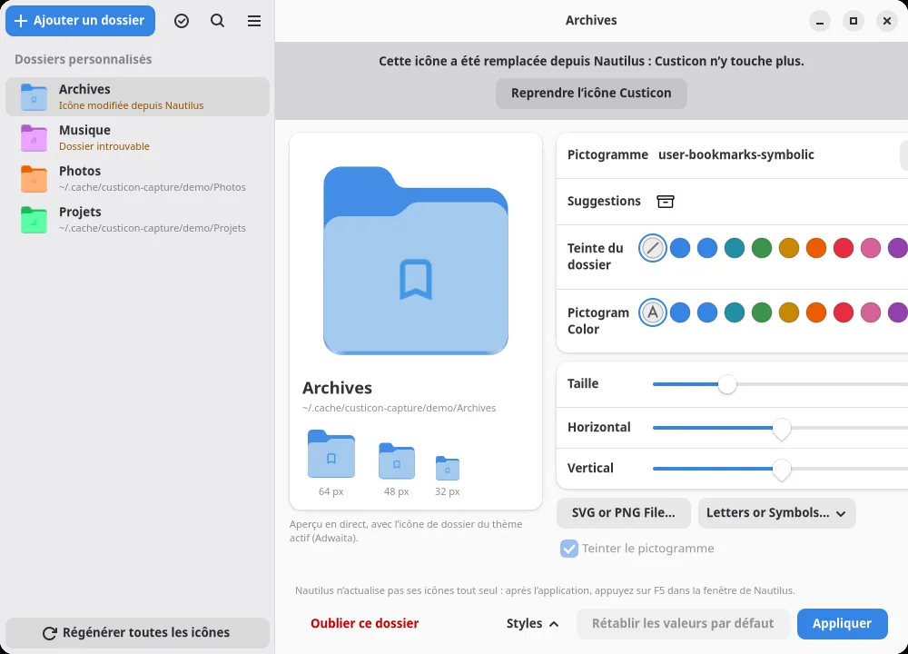

Choisir
Un pictogramme de votre thème d’icônes, parmi 1 500 icônes Phosphor, 1 600 émoji ou 3 400 logos de marques fournis avec Custicon, trouvé par son nom en français ou en anglais. Ou votre propre fichier SVG ou PNG, ou quelques lettres.
English · Français

Un pictogramme sur l’icône de vos dossiers, dans Nautilus.
Logiciel libre pour Linux, disponible en français et en anglais.
Nautilus affiche les dossiers Documents, Musique et Images avec un petit pictogramme au centre. Custicon permet de faire la même chose pour n’importe quel dossier.
Le pictogramme est posé sur la vraie icône de dossier de votre thème d’icônes actuel, pas sur une imitation : le résultat suit votre thème. Si vous changez de thème, une seule action met à jour toutes vos icônes. Vous pouvez aussi teinter le dossier lui-même.
Un pictogramme de votre thème d’icônes, parmi 1 500 icônes Phosphor, 1 600 émoji ou 3 400 logos de marques fournis avec Custicon, trouvé par son nom en français ou en anglais. Ou votre propre fichier SVG ou PNG, ou quelques lettres.
Couleur automatique ou choisie, taille et position, avec un aperçu en direct à quatre tailles.
Donnez au dossier lui-même la couleur de votre choix, ou la couleur d’accent de votre système. Les zones claires et sombres du dossier sont conservées.
Le dossier retrouve exactement l’icône qu’il avait avant, et un retrait peut être annulé pendant quelques secondes.
Après un changement de thème ou de couleur d’accent, un clic met à jour toutes vos icônes.
Rien n’est jamais écrit dans vos dossiers. L’icône vit dans les métadonnées que Nautilus lit déjà.




Fedora, Linux Mint, Pop!_OS et beaucoup d’autres distributions fournissent déjà Flatpak. Sur Ubuntu et quelques autres, suivez d’abord le guide officiel de votre distribution, puis redémarrez votre session.
Cliquez sur le bouton ci-dessous et ouvrez le fichier avec l’application Logiciels, ou lancez cette commande :
flatpak install --user https://gor3pig.github.io/Custicon/custicon.flatpakrefCusticon se met à jour comme vos autres applications : l’application Logiciels propose chaque nouvelle version, et chaque mise à jour est signée.
Custicon demande un accès en lecture seule à votre dossier personnel, pour voir le vrai emplacement de vos dossiers. Il ne peut pas modifier leur contenu et n’a aucun accès au réseau.
Custicon fonctionne sur toute distribution Linux qui prend en charge Flatpak, avec Nautilus, sur un PC Intel ou AMD 64 bits. Il n’existe pas de version pour Windows, macOS ou les appareils ARM.